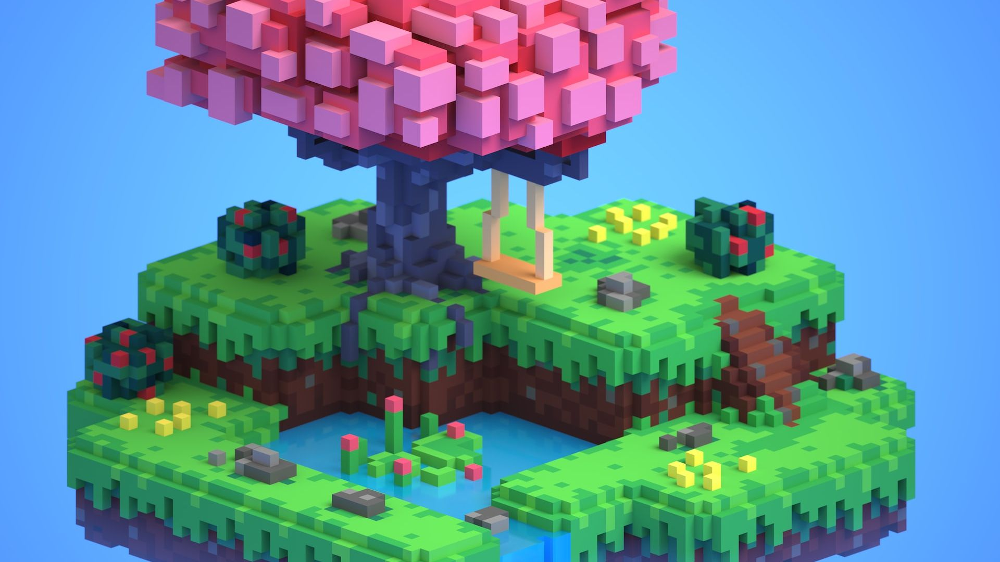

The Best 5 Open World Adevnture Games
1. The Legend of Zelda: Breath of the Wild
Breath of the Wild is the ultimate realization of the promise of the Zelda series, a template first laid out way back in the NES days. Breath of the Wild is, quite simply, the game we imagined ourselves playing all those years ago. The images we held in our minds, colored by the art in the instruction manual, were suddenly made three-dimensional, fully explorable, and infinitely replayable.
2. The Witcher 3: Wild Hunt
Even as it was released near other entries on this list, The Witcher 3 set a new bar for open-world games, one that plenty of other games are still compared to now, seven years later. From the barren hills of Velen to the bustling streets of Novigrad or the verdant fields of Blood & Wine's Toussaint, every corner of The Continent is full to bursting with monsters to slay, secrets to uncover, and dozens of hours of side quests that feel just as fleshed out and meaningful as its main story.
3. Grand Theft Auto 5
A perfect send off to the Xbox 360 and PS3 era of gaming, Grand Theft Auto V's legacy and influence has maintained a powerful presence in the industry spanning into two additional hardware generations, as GTA V proved to be a powerful force on both the PS4 and Xbox One, and may likely be again on the PS5 and Xbox Series. And, of course, it never truly leaves the spotlight thanks to the impressive and regular updates Grand Theft Auto Online receives.
4. Red Dead Redemption 2
Red Dead Redemption 2 is deliberate in the way it allows you to live out the life of a fictional cowboy named Arthur Morgan. Morgan's story is an authored experience but the magic of Red Dead Redemption 2 is how the game's open world allows players to flesh out that life with meaningful experiences thanks to its meticulously crafted world. Want your Arthur to get really into hunting? Then have fun stalking, trapping, and skinning hundreds of animals, complete with their own food chain and habits. Want to get weirdly into artifact hunting? Then go right ahead. Or perhaps you just want to soak in the atmosphere and hand carve your bullets by campfire for a small damage buff.
5. Elden Ring
It may seem a little rash to just immediately catapult Elden Ring above some of the all-time greats that make up the top half of this list. That said, Elden Ring is one of the boldest and most groundbreaking open-world games of the past decade; one that empowers the player to find their own path without being guided by an endless series of map markers, waypoints, and hollow side quests.